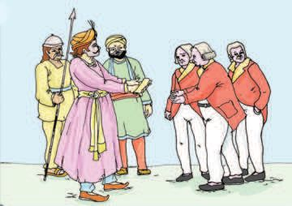
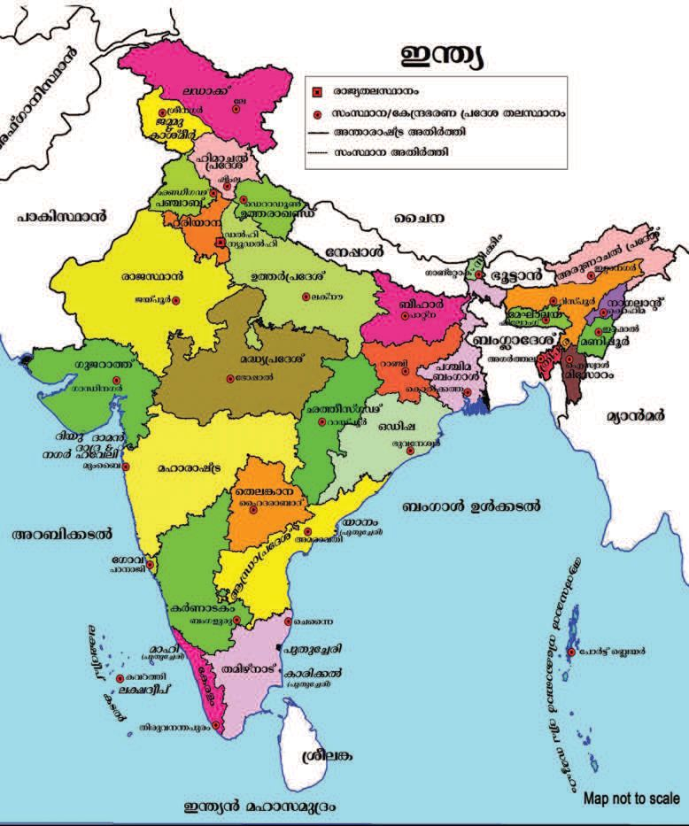
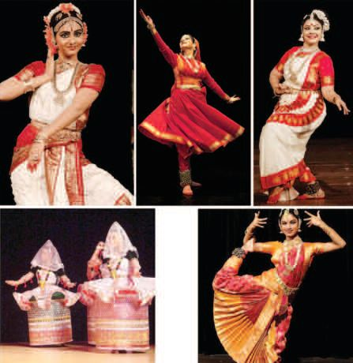
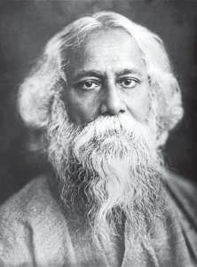

പര〿ിസര〿പഠനം IV
2
ത⑇ജസ㠿ിᩙ妓 ᩍ䶏ൂള㌿ി്䴿 സ㠿ാ⟧യദ☿ിന⠾ത⑇ഷ㜂ം ന⠾ടᨪ⪎ുകയ⼾ണ⍍്. സ㠿മ⹂ൂ്䵨യശ㘾验്䵇ᩘ墌ിᩙ妓 ത⑇ന⠾ത⑃ാᩈ䢌ിൽ വ㔿ിവ㔿ിധ പര〿ിപടികള㌿ും ആസ㠿ൂ്䵔ണ⍍ം ᩙ妓ᩓ厌ിᨾ㺎ുᩂ䊚്. 26


പര〿ിസര〿പഠനം IV
2
ത⑇ജസ㠿ിᩙ妓 ᩍ䶏ൂള㌿ി്䴿 സ㠿ാ⟧യദ☿ിന⠾ത⑇ഷ㜂ം ന⠾ടᨪ⪎ുകയ⼾ണ⍍്. സ㠿മ⹂ൂ്䵨യശ㘾验്䵇ᩘ墌ിᩙ妓 ത⑇ന⠾ത⑃ാᩈ䢌ിൽ വ㔿ിവ㔿ിധ പര〿ിപടികള㌿ും ആസ㠿ൂ്䵔ണ⍍ം ᩙ妓ᩓ厌ിᨾ㺎ുᩂ䊚്. 26


IV
പര〿ിസര〿പഠനം
ത⑇മ⹂ടീ്䴴്䴽 ഓത⑇ര〿 ᩇ䞏ൂᩔ和ിന⠾ും ുമ⹂ലക്䵀 ന⠾്䴿കി. സ㠿ാ⟧യദ☿ിന⠾വ㔿ുമ⹂യ⼾ി ബ്䵏ᩙ妓ᩔ和ᨾ㺎 പിᩔ和ു ᩞ庋റㄾᨪ⪎ു്䵐 ുമ⹂ലയ⼾ണ⍍് ത⑇ജസ㠿ിന⠾ും കൂᨾ㺎ുക്䴽ᨪ⪎ും ലഭⴿി്䴴്. പിᩔ和ി്䴿 ഉ്䵀ᩙ妓ᩔ和ടുᩈ䢌ു്䵐ിന⠾ു്䵦 വ㔿ിവ㔿ര〿്䴲്䵀 ത⑇ശ㘾ഖര〿ിᨪ⪎്䴵 അവ㔿്䴽 ᩇ䞏്䵍ശ㘾ല സ㠿്䵎്䴽ശ㘾ിᨪ⪎്䴵 ീര〿ുമ⹂ന⠾ി്䴴ു. അവ㔿ര〿ുᩙ妓ട മ⹂ു്䴵 അധയപകന⠾യ⼾ വ㔿ിന⠾യ⼾്䴵മ⹂ഷ㜂ണ⍍് ᩇ䞏്䵍ശ㘾ലയ⼾ുᩙ妓ട ല㉈ലത⑇റㄾിയ⼾്䴵. കുᨾ㺎ികൾ മ⹂ഷ㜂ിത⑇ന⠾ട് ᩇ䞏്䵍ശ㘾ലസ㠿്䵎ർശ㘾ന⠾ᩈ䢌ിᩙ妓 ഉത⑇ ശ㘾യം വ㔿യ്䴹മ⹂ᨪ⪎ി.
"കുᨾ㺎ികത⑇ള㌿, ന⠾ᩜ岎ുᩙ妓ട ര〿ജയം ഭⴿര〿ി്䴴ിര〿ു്䵐 വ㔿ിത⑇ദ☿ശ㘾ിക്䵀 ആര〿ᩙ妓ണ⍍്䵐ു പറㄾയ⼾ത⑇മ⹂?" വ㔿ിന⠾യ⼾്䴵മ⹂ഷ㜂് ത⑇ദ☿ി്䴴ു. "ിᨾ㺎ീഷ㜂ുക്䴽" ഭⴿവ㔿യ ആത⑇വ㔿ശ㘾ത⑇ᩈ䢌ᩙ妓ട പറㄾᨼ㲎ു. "മ⹂ിടുᨪ⪎ി; ആᩙ妓ᨾ㺎, എ്䴲ᩙ妓ന⠾യ⼾ണ⍍് അവ㔿്䴽 ന⠾ᩜ岎ുᩙ妓ട അധികര〿ികള㌿യ⼾ി മ⹂റㄾിയ⼾ᩙ妓്䵐് ന⠾ി്䴲്䵀ᨪ⪎റㄾിയ⼾ത⑇മ⹂?" കുᨾ㺎ിക്䵀 അറㄾിയ⼾ിᩙ妓്䵐 മ⹂ᨾ㺎ി്䴿 പര〿്䵢ര〿ം ത⑇ന⠾ᨪ⪎ി. മ⹂ഷ㜂് ᩇ䞏്䵍ശ㘾ലയ⼾ിൽന⠾ി്䵐് ഒര〿ു ി്䵔കഥᩔ和ു്䵜കം അവ㔿്䴽ᨪ⪎് വ㔿യ⼾ിᨪ⪎ ന⠾യ⼾ി ന⠾്䴿കി. കൂᨾ㺎ുക്䴽 ്䴿പര〿യത⑇ᩈ䢌ᩙ妓ട പു്䵜കം വ㔿യ⼾ി്䴴ുുട്䴲ി.
27



പര〿ിസര〿പഠനം IV 1
2
ഏല㈂ം, കᕁുരぁുമ⹁ുളകᕁ് ത⑁ുടᨲ㊌ിയ സ㡁ുഗ്䵏 ്䵖്䵤യᨲ㊌ളും പᨾ㺚്, പരぁുᩈ䢌ി ത⑁ുടᨲ㊌ിയ ത⑁ുണ⌿ിᩈ䢌രぁᨲ㊌ളും ്䵤ാᨲ㊌ു്䵐ത⑁ിന⠾ായാണ⌿് ്䵤ിദ♇ശ㘿ികᕁൾ കᕁ്䵔ല㈂ുകᕁളി്䴿 ആയമ⹁ായി ഇ驻യയില㉆ല㈂ᩈ䢌ിയത⑁്.
28
പത⑁ില㉆യ്䵔ത⑁ില㉆യ അ്䵤ർ രぁാജ᰾ാ്䴪ᩖ嚋ാരぁി്䴿ന⠾ി്䵐് ്䵚ദ♇ത⑁യകᕁ ആന⠾ുകᕁൂല㈂യᨲ㊌്䵀 ദ♇ന⠾ടില㉆യടുᩈ䢌് ഇ്䵤ില㉆ട ്䵤യ്䵤സ㡁ായശ㘿ാല㈂കᕁൾ ᩝ嶋ാപിᨴ㒎ു.
3
4
ഇ驻യയില㉆ല㈂ ്䵤ി്䵤ിധ ്䵚ദ♇ശ㘿ᨲ㊌ളില㉆ല㈂ രぁാജ᰾ാ്䴪ᩖ嚋ാർ പരぁ്䵢രぁം ശ㘿ᩔ咎ു്䴪ളായി ദ♇പാരぁടിᨴ㒎ു ന⠾ി്䵐ിരぁു്䵐ത⑁ിന⠾ാ്䴿 ്䵤ിദ♇ശ㘿ികᕁൾ്䴪് എളു്䵔ᩈ䢌ി്䴿 അ്䵤രぁുല㉆ട ശ㘿ᨹ㦌ി ്䵤്䴽ധി്䵔ി്䴪ാ്䴵 കᕁഴ㐿ിᨼ㲎ു.
പീരぁᨮ⺌ി, ദ♇ത⑁ാ്䴪് ത⑁ുടᨲ㊌ിയ ല㉆മ⹁ᨴ㒎ല㉆്䵔ᨾ㺚 ആയുധᨲ㊌ളും യു്䵍ത⑁驼ᨲ㊌ളും ഉപദ♇യാഗിᨴ㒎് ന⠾ാᨾ㺚ുകᕁാല㉆രぁ അ്䵤്䴽 ്䵤രぁുത⑁ിയില㈂ാ്䴪ി.
5
6
്䵅ദ♇മ⹁ണ⌿ കᕃഷ㜿ിയും കᕁᨴ㒎്䵤ട്䵤ും രぁാജ᰾ാ്䴪ᩖ嚋ാരぁും അ്䵤രぁുല㉆ട ന⠾ിയ驼ണ⌿ᩈ䢌ില㈂ായി. ന⠾ാᨾ㺚ുരぁാജ᰾യᨲ㊌്䵀 അ്䵤ർ പിടില㉆ᨴ㒎ടുᩈ䢌ു.
കᕁാല㈂ᨲ㊌്䵀ല㉆കᕁാᩂ䊚് ഇ驻യയുല㉆ട മ⹁ുഴ㐿ു്䵤്䴵 ്䵚ദ♇ശ㘿ᨲ㊌ളില㈂ും ᩜ岌ിᨾ㺚ീഷ㜿ുകᕁാ്䴽 ആധിപത⑁യം ദ♇ന⠾ടി. പി്䵐ീടു്䵦 ഇരぁു്䵐ൂദ♇ാളം ്䵤്䴽ഷ㜿ം ഇ驻യ അ്䵤രぁുല㉆ട അധീന⠾ത⑁യില㈂ായിരぁു്䵐ു.

IV
പര〿ിസര〿പഠനം
"ി്䵔കഥ വ㔿യ⼾ി്䴴ത⑇. ഇന⠾ി എᩙ妓 ത⑇ദ☿യ്䴲്䵀ᨪ⪎് ഉᩈ䢌ര〿ം പറㄾയ⼾ൂ." മ⹂ഷ㜂് ുട്䴽്䵐ു. മ⹂ഷ㜂ിᩙ妓 ത⑇ദ☿യ്䴲്䵀ᨪ⪎് ന⠾ി്䴲ള㌿ും ഉᩈ䢌ര〿ം കᩙ妓ᩂ䊚ᩈ䢌ൂ. വ㔿ിത⑇ദ☿ശ㘾ിക്䵀 ഇ驻യയ⼾ിᩙ妓ലᩈ䢌ിയ⼾് എ驻ിന⠾ുത⑇വ㔿ᩂ䊚ിയ⼾യ⼾ിര〿ു്䵐ു? വ㔿ിത⑇ദ☿ശ㘾ിക്䵀ᨪ⪎് ഇ驻യയ⼾ി്䴿 അധികര〿ം ᩝ嶋പിᨪ⪎്䴵 എള㌿ുᩔ和 ᩈ䢌ിൽ കഴ㐿ിᨼ㲎ᩙ妓്䴲ᩙ妓ന⠾യ⼾ണ⍍്? ിᨾ㺎ീഷ㜂ുകര〿ുമ⹂യ⼾ു്䵦 ത⑇പര〿ᨾ㺎്䴲ള㌿ി്䴿 ഇ驻യᨪ⪎്䴽ᨪ⪎് പിടി്䴴ുന⠾ിൽ ᨪ⪎്䴵 കഴ㐿ിയ⼾ᩙ妓 വ㔿്䵐ᩙ妓驻ുᩙ妓കᩂ䊚യ⼾ിര〿ു്䵐ു?
ᩜ岌ിᨾ㺚ീഷുകോ്䴽ᩙ妓ᨪ⪎തിര〿ോയ⼿ ᩈ䢘പോര〿ോᨾ㺚്䴲്䵀 "ത⑇്䵨! ിᨾ㺎ീഷ㜂ുകര〿ുᩙ妓ട ഭⴿര〿ണ⍍ᩈ䢌ി്䴿 ന⠾ᩜ岎ുᩙ妓ട ര〿ജയᩙ妓ᩈ䢌 ജന⠾്䴲്䵀 വ㔿ള㌿ ᩙ妓ര〿യ⼾ധികം ്䵚യ⼾സ㠿മ⹂ന⠾ുഭⴿവ㔿ി്䴴ു; അത⑇ മ⹂ത⑇ഷ㜂?" ന⠾ീന⠾ ത⑇ദ☿ി്䴴ു. "അᩙ妓യ⼾ᩙ妓. ᩙ妓പറㄾുിമ⹂ുᨾ㺎ിയ⼾ ജന⠾ം വ㔿ിവ㔿ിധ ᩝ嶋ല്䴲ള㌿ി്䴿 ിᨾ㺎ീഷ㜂ുകർ ᩙ妓ᨪ⪎ിര〿യ⼾ി സ㠿മ⹂ര〿്䴲്䵀ᨪ⪎ു ുടᨪ⪎മ⹂ിᨾ㺎ു. ന⠾ിയ⼾മ⹂്䴲്䵀 ലംി്䴴ും ന⠾ി്䵰്䵨 കര〿ണ⍍ം ്䵚ഖയപി്䴴ും ജഥക്䵀 സ㠿ംടിᩔ和ി്䴴ും അവ㔿്䴽 ്䵚ിത⑇ഷ㜂ധി്䴴ു". "ഇᩈ䢌ര〿ം ്䵚ിത⑇ഷ㜂ധ്䴲ള㌿ത⑇ മ⹂ത⑇ഷ㜂, സവോത⟧യസമ⹗ര〿ം എ്䵐 ത⑇പര〿ിലറㄾി യ⼾ᩙ妓ᩔ和ടു്䵐്?" ഉട്䴵 വ㔿്䵐ു ന⠾വ㔿ീന⠾ിᩙ妓 സ㠿ംശ㘾യ⼾ം. "മ⹂ിടുᨪ⪎്䴵". മ⹂ഷ㜂് ന⠾വ㔿ീന⠾ിᩙ妓ന⠾ ത⑇ള㌿ി്䴿ᩈ䢌ᨾ㺎ി അഭⴿിന⠾്䵎ി്䴴ു. "ഇന⠾ി ന⠾മ⹂ുᨪ⪎് സ㠿ാ⟧യസ㠿മ⹂ര〿ᩈ䢌ിᩙ妓ല ില ്䵚ധന⠾സ㠿ംഭⴿവ㔿്䴲്䵀 പര〿ി യ⼾ᩙ妓ᩔ和ട." മ⹂ഷ㜂് അലമ⹂ര〿യ⼾ി്䴿ന⠾ി്䵐് ഒര〿ു പു്䵜കᩙ妓മ⹂ടുᩈ䢌് കുᨾ㺎ിക്䵀ᨪ⪎് ന⠾്䴿കി. പു്䵜കᩈ䢌ി്䴿ന⠾ി്䵐് കുᨾ㺎ിക്䵀 ത⑇ശ㘾ഖര〿ി്䴴 വ㔿ിവ㔿ര〿്䴲്䵀 വ㔿യ⼾ിᨪ⪎ൂ.
ഉ്䵔ുസതയ證ഹ㤾ം (1930) അᨪ⪎ലᩈ䢌് കട്䴿ᩙ妓വ㔿്䵦ം വ㔿ᩢ抌ി്䴴് ഉᩔ和ുᩂ䊚ᨪ⪎ു്䵐 ത⑇ജലിയ⼾ി്䴿 ധര〿ള㌿ം ഇ驻യᨪ⪎്䴽 ഏ്䴽ᩙ妓ᩔ和ᨾ㺎ിര〿ു്䵐ു. ᩅ䖏ൂര〿ര〿യ⼾ ിᨾ㺎ീഷ㜂് ഭⴿര〿ണ⍍ധികര〿ിക്䵀 ഇ驻യᨪ⪎്䴽 ഉᩙ妓ᩔ和ടുᨪ⪎ു്䵐ിന⠾് ന⠾ികുി (്䵚ത⑇യക ുക) അട驙ണ⍍ᩙ妓മ⹂്䵐് ്䵚ഖയപി്䴴ു. ന⠾ികുിᩙ妓കടുᨪ⪎ᩙ妓 ഉᩔ和് കുറㄾുᨪ⪎ു്䵐വ㔿ᩙ妓ര〿 ട്䴮ലില ᨪ⪎ി. ഇിᩙ妓ന⠾ിᩙ妓ര〿 ഗ്䵏ിജി ജന⠾്䴲ᩙ妓ള㌿ സ㠿ംടിᩔ和ി്䴴ു. ഗ്䵏ിജിയ⼾ുᩙ妓ട സ㠿ബ്䴽മ⹂ി ആ്䵦മ⹂ᩈ䢌ി്䴿ന⠾ി്䵐് വ㔿ള㌿ᩙ妓ര〿യ⼾കᩙ妓ലയ⼾ു്䵦 ദ☿ᩄ䒌ികടᩔ和ുറㄾത⑇ᩈ䢌ᨪ⪎് ജഥയ⼾യ⼾ി അവ㔿്䴽 ന⠾ീ്䴲ി. 29


പര〿ിസര〿പഠനം IV കടലി്䴿ന⠾ി്䵐് ഒര〿ുപിടി ഉᩔ和് വ㔿ര〿ിᩙ妓യ⼾ടുᩈ䢌് ഗ്䵏ിജി പറㄾᨼ㲎ു. "ഉᩔ和ുപിടി്䴴 ഈ ല㉈കക്䵀 ക്䴽ᨪ⪎ ᩙ妓ᩔ和ᨾ㺎ലും ഉᩔ和് വ㔿ിᨾ㺎ു ᩙ妓കടുᨪ⪎ി." ഉᩔ和ുസ㠿യᩇ䞏്䵨ᩙ妓ᩈ䢌ᨪ⪎ു റㄾി്䴴് കൂടു്䴿 വ㔿ിവ㔿ര〿 ്䴲്䵀 ടീ്䴴റㄾിᩙ妓 സ㠿്䵨യ⼾ത⑇ᩈ䢌ᩙ妓ട കᩙ妓ᩂ䊚ᩈ䢌ൂ. ഉᩔ和ുസ㠿യᩇ䞏്䵨ം സ㠿ംടിᩔ和ി്䴴 ീയ⼾ിയ⼾ും ᩝ嶋ലവ㔿ും ഗ്䵏ിജിയ⼾ുᩙ妓ട ത⑇ന⠾ത⑃ാം ദ☿ᩄ䒌ിയ⼾്䵔
കവിᩢ抎് ഇ驻യ സമ⹗ര〿ം (1942) ുട്䴽്䵐് മ⹂ഷ㜂് ഒര〿ു സ㠿ാ⟧യസ㠿മ⹂ര〿ത⑇സ㠿ന⠾ന⠾ിയ⼾ുᩙ妓ട ഡയ⼾റㄾിᨪ⪎ുറㄾിᩔ和് കുᨾ㺎ി കൾᨪ⪎് പര〿ിയ⼾ᩙ妓ᩔ和ടുᩈ䢌ി. 1942 ആഗ➚髧് 8 ᩭ涋ാത⟧യᩈ䢌ിന⡁ുവ㕇ᩂ䊌ി യ⽁ു്䵦 വ㕇ര〾്䴾്䴲ള㌿ിൽ എന⡁ിവ㕇്䵢ു ആവ㕇ശു ഊർജു ലഭⴿി്䴴 ദ☿ിന⡁മ⸾ യ⽁ിര〾ുᩐ傎ു ഇᩐ傎്. ഇ驻യൻ ന⡁ഷണൽ വ㕇്䴰്䵇ᩭ涋ിᩙ妓 വ㕇ംᩙ妓 ᩭ涋വ㕇ള㌿ന⡁ᩈ䢌ി്䴿 ഇᩐ傎് ഞḾ്䴵 ᩙ妓ടὁുᩈ䢌ു. ᩭ涋വ㕇ള㌿ന⡁ᩈ䢌ി്䴿 ്䴴് ‘ാി്䵢് ഇ驻യ’ എᩐ傎 ആശയ അതര〾ിᩔ和ിᩙ妓ᩔ和്䴾ു. ‘ഇ驻യ ിടὁു’ എᩐ傎ണവ㕇 ഈ
മ⸾ുᩖ嚋യᩈ䢌ിᩙ妓 അ്䴽ഥ│. ᩭ涋ാത⟧യᩈ䢌ിന⡁ുവ㕇ᩂ䊌ി യ⽁ു്䵦 ഏ്䵢ു ശᨹ㦌ിയ⽁ ്䴽ᩐ傎 ᩭ涋മ⸾ര〾മ⸾യ⽁ിര〾ിണ ഇᩙ妓തᩐ傎് ഗᩏ侌ിജി ഞḾ്䴲ᩙ妓ള㌿ ഓർിᩔ和ി്䴴ു. ‘്䵚്䴽ᩈ䢌ി ു അᩙ妓ി്䴿 മ⸾ര〾ിു’ എᩐ傎് ᩔ和ുജി എവ㕇ര〾 ടὁു ആᩮ溋ാന⡁ ᩙ妓ᩓ厎ു. ഇതുവ㕇്䴾 ഞḾ്䴵 അറㄿിയ⽁ᩙ妓ത എഴ㑁ുവ㕇ᩐ傎്䵢ു ന⡁ിᩐ傎് മ⸾ുᩖ嚌ിുര〾ു്䴾ി മ⸾ുᩖ嚋 യ ിള㌿ി്䴴ുവ㕇യ⽁ി. 'ാി്䵢് ഇ驻യ...ാി്䵢് ഇ驻യ...'
"ഗ്䵏ിജിയ⼾ുᩙ妓ട ആ്䵨ാന⠾മ⹂ന⠾ുസ㠿ര〿ി്䴴് ആയ⼾ിര〿്䴲്䵀 സ㠿മ⹂ര〿ᩈ䢌ി്䴿 പᩙ妓്䴮ടു ᩈ䢌ിᨾ㺎ുᩂ䊚കുമ⹂ത⑇ മ⹂ത⑇ഷ㜂?" ത⑇ജസ㠿് ത⑇ദ☿ി്䴴ു. 30


IV
പര〿ിസര〿പഠനം
"ീ്䴽്䴴യ⼾യ⼾ും. ഈ സ㠿മ⹂ര〿ᩈ䢌ിᩙ妓 മ⹂ുᩖ嚋 വ㔿കയം ഇ驻യയ⼾ിᩙ妓ല ്䴲ും മ⹂ുഴ㐿്䴲ിത⑇ᨪ⪎ᨾ㺎ു. ഇ് ജന⠾്䴲്䵀ᨪ⪎് കൂടു്䴿 ശ㘾്䴹ി പക്䴽്䵐ു." മ⹂ഷ㜂് പറㄾᨼ㲎ു. കാിᩢ抌് ഇ驻യ സ㠿മ⹂ര〿ᩙ妓ᩈ䢌ᨪ⪎ുറㄾി്䴴് ᩙ妓ഴ㐿ᩔ和റㄾയ⼾ു്䵐 വ㔿ിവ㔿ര〿്䴲്䵀 ്䵇സ㠿് ല㉈ലറㄾിയ⼾ുᩙ妓ട സ㠿്䵨യ⼾ത⑇ᩈ䢌ᩙ妓ട ത⑇ശ㘾ഖര〿ി്䴴് കുറㄾിᩔ和് ᩞ庋റㄾᨪ⪎ൂ... കാിᩢ抌് ഇ驻യ ദ☿ിന⠾ം ത⑇ന⠾ാം ന⠾്䴿കിയ⼾വ㔿്䴽 സ㠿മ⹂ര〿ᩈ䢌ിᩙ妓 ഫലം
സവോത⟧യസമ⹗ര〿ം ᩈ䢘കര〿ള㍁ിലും "അത⑇ᩔ和്䵀 ത⑇കര〿ള㌿ᩈ䢌ിലും ധര〿ള㌿ം സ㠿മ⹂ര〿്䴲്䵀 ന⠾ട്䵐ിᨾ㺎ുᩂ䊚കിത⑇ മ⹂ത⑇ഷ㜂?" ന⠾വ㔿ീ്䴵 ത⑇ദ☿ി്䴴ു. "ഉᩪ檚്. ഗ്䵏ിജിയ⼾ുᩙ妓ട ത⑇ന⠾ത⑃ാᩈ䢌ിലു്䵦 സ㠿ാ ⟧യസ㠿മ⹂ര〿്䴲ള㌿ുᩙ妓ട ആത⑇വ㔿ശ㘾ം ത⑇കര〿ള㌿ᩈ䢌ിലും അലയ⼾ടി്䴴ു. ᩙ妓ക.ᩈ䢘കള㍁്䵔ൻ കᩆ䚏ൂര〿ിᩙ妓ല പᩞ庋്䵐ൂ്䴽 കടᩔ和ുറㄾᩈ䢌ും ഉᩔ和ുന⠾ിയ⼾മ⹂ം ലംിᨪ⪎ᩙ妓ᩔ和ᨾ㺎ു. സ㠿മ⹂ര〿ᩈ䢌ിᩙ妓 ത⑇ന⠾വ㔿യ⼾ി ്䵚വ㔿്䴽ᩈ䢌ി്䴴് ᩙ妓ക.ത⑇കള㌿ᩔ和ന⠾യ⼾ിര〿ു്䵐ു. പി്䵐ീട് എവ㔿ര〿ും അത⑇്䵨ᩙ妓ᩈ䢌 ' ᩈ䢘കര〿ള㍁ഗോ്䵏ി ' എ്䵐് വ㔿ിള㌿ി്䴴ു."
"ത⑇കര〿ള㌿ᩈ䢌ി്䴿 സ㠿മ⹂ര〿്䴲്䵀ᨪ⪎് ത⑇ന⠾ത⑃ാം ᩙ妓കടുᩈ䢌 മ⹂ᩢ抌ു്䵦വ㔿്䴽 ആᩙ妓ര〿ᩙ妓ᨪ⪎ യ⼾യ⼾ിര〿ു്䵐ു മ⹂ത⑇ഷ㜂?" കുᨾ㺎ിക്䵀ᨪ⪎് കൂടു്䴿 അറㄾിയ⼾ണ⍍ᩙ妓മ⹂്䵐യ⼾ി. "ന⠾ൂറㄾുകണ⍍ᨪ⪎ിന⠾് ത⑇പര〿ുᩂ䊚് ത⑇കത⑇ᨾ㺎; ടി.ᩙ妓ക.മ⹂ധവ㔿്䴵, ᩙ妓ക.പി. ത⑇കശ㘾വ㔿 ത⑇മ⹂ത⑇ന⠾്䴵, മ⹂ു്䵨ᩜ岎ദ☿് അᩒ劎ുറㄾᩧ枋്䴵, എ.ᩙ妓ക.ത⑇ഗപല്䴵, അᨪ⪎ᩜ岎 ᩙ妓റㄾിയ⼾്䴵, കുᨾ㺎ിമ⹂ള㌿ുഅᩜ岎 ുട്䴲ി അത⑇ന⠾കമ⹂ള㌿ുക്䵀." മ⹂ഷ㜂് ഓർᩜ岎ിᩙ妓്䴴ടുᩈ䢌ു പറㄾᨼ㲎ു. 31


പര〿ിസര〿പഠനം IV മ⹂ഷ㜂് പറㄾᨼ㲎 വ㔿ിവ㔿ര〿്䴲ᩙ妓ള㌿ കുᨾ㺎ിക്䵀 കുറㄾിᩙ妓്䴴ടുᩈ䢌ു. സ㠿ാ⟧യᩈ䢌ിന⠾ുത⑇വ㔿ᩂ䊚ി ത⑇കര〿ള㌿ᩈ䢌ി്䴿 ന⠾ട്䵐 ്䵚ധന⠾ സ㠿മ⹂ര〿്䴲്䵀 ഏᩙ妓 ᩙ妓ᨪ⪎ᩙ妓യ⼾്䵐് ന⠾ി്䴲്䵀 അത⑇ന⠾ാഷ㜂ിᩙ妓്䴴ഴ㐿ുൂ. മ⹂ലബ്䴽 കലപം
സവോത⟧യസമ⹗ര〿ᩈ䢘നതോᨪ⪎്䵀
മ⹗ഹ㤾ോᩒ劋ോഗോ്䵏ി "ഇ驻യയ⼾ിᩙ妓ലᩘ墋ടുമ⹂ു്䵦 സ㠿ാ⟧യസ㠿മ⹂ര〿ᨪ⪎്䴽ᨪ⪎് ്䵚ത⑇ദ☿ന⠾മ⹂യ⼾ ത⑇ന⠾വ㔿് ആര〿യ⼾ിര〿ു്䵐ുᩙ妓വ㔿്䵐് ന⠾ി്䴲്䵀ᨪ⪎റㄾിയ⼾ത⑇മ⹂ കുᨾ㺎ികത⑇ള㌿?" "ഗ്䵏ിജി." മ⹂ഷ㜂ിᩙ妓 ത⑇ദ☿യവ㔿ും കുᨾ㺎ികള㌿ുᩙ妓ട ഉᩈ䢌ര〿വ㔿ും ഒര〿ുമ⹂ി്䴴യ⼾ി ര〿ു്䵐ു. ᩇ䞏്䵍ശ㘾ലയ⼾ിᩙ妓ല പു്䵜ക്䴲ള㌿ി്䴿ന⠾ി്䵐് ഗ്䵏ിജിᩙ妓യ⼾ᨪ⪎ുറㄾി്䴴് കുᨾ㺎ികൾ ത⑇ശ㘾ഖര〿ി്䴴 വ㔿ിവ㔿ര〿്䴲്䵀 വ㔿യ⼾ിᨪ⪎ൂ. ഗുജറോിᩙ妓ല ᩈ䢘പോ്䴽ബⰾᩎ于റിലോണ⍍് ഗോ്䵏ിജി ജനി്䴴ത്. ᩈ䢘മ⹗ോഹ㤾്䴵ദ☿ോസ് കര〿ംചᨿᩎ于് ഗോ്䵏ി ᩙ妓യ⼿്䵐ോയ⼿ിര〿ു്䵐ു യ⼿ഥോ്䴽ഥ ᩈ䢘പര〿്. ദ☿്䵌ിണ⍍ോ ᩛ完ിᨪ⪎യ⼿ിᩙ妓ല വᨪ⪎ീലുᩈ䢘ദ☿യോഗം ഉᩈ䢘പ്䵌ി്䴴് തിര〿ിᩙ妓ക ഇ驻യയ⼿ിᩙ妓ലി അᩈ䢘ഹ㤾ം സവോത ⟧യസമ⹗ര〿ി്䴿 പᨮ⺌ുᩈ䢘ചᨿ്䴽്䵐ു. ലള㍁ിതമ⹗ോയ⼿ ജീവിതവും ഉയ⼿്䴽്䵐 ചᨿി驻യ⼿ും ഹ㥃ദ☿യമ⹗ോയ⼿ ഇട ᩙ妓പടലുംᩙ妓കോ്䵂് വള㍁ᩙ妓ര〿ᩙ妓്䵔ᩙ妓ᨾ㺚്䵐് അᩈ䢘ഹ㤾ം ഇ驻യയ⼿ുᩙ妓ട ᩈ䢘നതോവോയ⼿ി ഉയ⼿്䴽്䵐ു. സതയവും അഹ㤾ിംസയ⼿ും അᩈ䢘 ഹ㤾ിᩙ妓 വോᨪ⪎ിലും ്䵚വ㕃ിയ⼿ിലും ᩙ妓തള㍁ി്䴼ുനി്䵐ു. കുᨾ㺚ിക്䵀 അᩈ䢘ഹ㤾ᩙ妓 ‘ബⰾോ്䵔ുജി’ എ്䵐് ᩈ䢘ഹ㤾ᩈ䢘ോᩙ妓ട വിള㍁ി്䴴ു. ചᨿᩘ墚ോര〿്䴵 സമ⹗ര〿ം (1917), നിᩰ炋ഹ㤾കര〿ണ⍍ സമ⹗ര〿ം (1920), ഉ്䵔ുസതയ 證ഹ㤾ം (1930), കവിᩢ抎് ഇ驻യോ സമ⹗ര〿ം (1942) തുട്䴲ിയ⼿വ❙姛് അᩈ䢘ഹ㤾ം ᩈ䢘നത⑃തവം ന്䴿കി.
32

IV
പര〿ിസര〿പഠനം
ഗ്䵏ിജിᩙ妓യ⼾ᨪ⪎ുറㄾി്䴴് കൂടു്䴿 വ㔿ിവ㔿ര〿്䴲്䵀 ᩍ䶏ൂൾ ല㉈ലറㄾിയ⼾ുᩙ妓ട സ㠿്䵨 യ⼾ത⑇ᩈ䢌ᩙ妓ട ത⑇ശ㘾ഖര〿ി്䴴് ᩙ妓റㄾുവ㔿ിവ㔿ര〿ണ⍍ം ᩞ庋റㄾᨪ⪎ൂ. സ㠿ം്䴲ള㌿യ⼾ി ' ഗോ്䵏ി്䵔തി്䵔് ' ᩞ庋റㄾᨪ⪎ൂ. ജ്䵖ᩝ嶋ലം ജന⠾ന⠾ം
മ⹂പിᨪ⪎ൾ
ഗ്䵏ിജിയ⼾ും സ㠿ാ⟧യസ㠿മ⹂ര〿വ㔿ും
ആ്䵒കഥ
സ㠿മ⹂ര〿ര〿ീി
ജീവ㔿ിര〿ീി സ㠿ാഭⴿവ㔿ഗുണ⍍്䴲ൾ
ജവഹ㤾്䴽ലോ്䴿 ᩙ妓നഹ㤾്റു "ഇന⠾ി മ⹂ᩙ妓ᩢ抌ര〿ᩙ妓ള㌿ᨪ⪎ൂടി പര〿ിയ⼾ᩙ妓ᩔ和ടുᩈ䢌. ᩙ妓ഴ㐿 ന⠾ൽകിയ⼾ിര〿ിᨪ⪎ു്䵐 സ㠿ൂന⠾കള㌿ി്䴿 ന⠾ി്䵐് ആᩙ妓ള㌿ കᩙ妓ᩂ䊚ᩈ䢌ത⑇മ⹂?" വ㔿ിന⠾യ⼾ൻമ⹂ഷ㜂് ത⑇ദ☿ി്䴴ു. സ㠿ാ⟧യസ㠿മ⹂ര〿ᩈ䢌ിᩙ妓 മ⹂ു്䴵ന⠾ിര〿യ⼾ി്䴿 ഗ്䵏ിജിᩙ妓ᨪ⪎ᩔ和ം ്䵚വ㔿്䴽ᩈ䢌ി്䴴ു. ഇ驻യയ⼾ുᩙ妓ട ആദ☿യᩙ妓ᩈ䢌 ്䵚ധന⠾മ⹂⟧ി യ⼾ണ⍍്. ഇ驻യ സ㠿ാ⟧യം ത⑇ന⠾ടിയ⼾ വ㔿ിവ㔿ര〿ം ്䵚ഖയപി്䴴് ഇത⑇്䵨മ⹂ണ⍍്. കുᨾ㺎ിക്䵀 അത⑇്䵨ᩙ妓ᩈ䢌 ത⑇്䵨ത⑇ᩈ䢌ᩙ妓ട ' ചᨿോ്䴴ോജി ' എ്䵐ണ⍍് വ㔿ിള㌿ി്䴴ിര〿ു്䵐്. എവ㔿ര〿ും ത⑇്䴽്䵐് ഉᩈ䢌ര〿ം പറㄾᨼ㲎ു. "ജവ㔿്䵨്䴽ല്䴿 ᩙ妓ന⠾്䵨്റㄾു". ജവ㔿്䵨്䴽ല്䴿 ᩙ妓ന⠾്䵨്റㄾുവ㔿ിᩙ妓ന⠾ᨪ⪎ുറㄾി്䴴ു്䵦 ᩙ妓ഴ㐿ᩔ和റㄾയ⼾ു്䵐 ത⑇ദ☿യ്䴲്䵀ᨪ⪎് ഉᩈ䢌ര〿ം കᩙ妓ᩂ䊚ᩈ䢌ൂ.
33

പര〿ിസര〿പഠനം IV ᩙ妓ന⠾്䵨്റㄾുവ㔿ിᩙ妓 ജ്䵖ദ☿ിന⠾ം എ്䵐ണ⍍്? ഈ ദ☿ിന⠾ം ഏുത⑇പര〿ിലണ⍍് ന⠾ ആത⑇ഷ㜂ിᨪ⪎ു്䵐്? --------------------------------------------------------------------------------------------------- ᩙ妓ന⠾്䵨്റㄾുവ㔿ിᩙ妓 ആ്䵒കഥയ⼾ുᩙ妓ട ത⑇പᩙ妓ര〿驻്? ---------------------------------------------------------------------------------------------------കൂടു്䴿 വ㔿ിവ㔿ര〿്䴲്䵀 ത⑇ശ㘾ഖര〿ി്䴴് ജവ㔿്䵨്䴽ല്䴿 ᩙ妓ന⠾്䵨്റㄾുവ㔿ിᩙ妓ന⠾ᨪ⪎ുറㄾി്䴴് ഒര〿ു ്䵚സ㠿ംഗം ᩞ庋റㄾᨪ⪎ി ്䵇സ㠿ിൽ അവ㔿ര〿ിᩔ和ിᨪ⪎ൂ. സ㠿ാ⟧യസ㠿മ⹂ര〿ᩈ䢌ി്䴿 ്䵚ധന⠾ പ്䴮ുവ㔿്䵨ി്䴴 മ⹂ᩢ抌ു ിലᩙ妓ര〿ᨪ⪎ൂടി മ⹂ഷ㜂് കുᨾ㺎ിക്䵀ᨪ⪎് പര〿ിയ⼾ᩙ妓ᩔ和ടുᩈ䢌ി.
സ㠿ുഭⴿഷ㜂്驾 ത⑇ബസ㠿്
സ㠿്䴽ദ☿്䴽 വ㔿ഭⴿയ⼾് പത⑇ᨾ㺎്䴿
ത⑇ഗപലകᕃ്䵚 ത⑇ഗഖത⑇ല
സ㠿ത⑇ര〿ജിന⠾ി ന⠾യ⼾ിഡു
ബലഗംഗധര〿 ിലക്
ഭⴿഗ് സ㠿ിങ᥍്
അര〿ുണ⍍ ആസ㠿ഫ് അലി
ഖ്䴵 അᩒ劎ു്䵀 ഗഫർ ഖ്䴵
സ㠿ാ⟧യസ㠿മ⹂ര〿ᩈ䢌ിൽ പᩙ妓്䴮ടുᩈ䢌 ത⑇ന⠾ᨪ⪎ᩙ妓ള㌿ പര〿ിയ⼾ᩙ妓ᩔ和ᨾ㺎ത⑇. ുവ㔿ᩙ妓ട ന⠾ൽകിയ⼾ വ㔿്䵜ുകള㌿ുമ⹂യ⼾ി ബ്䵏ᩙ妓ᩔ和ᨾ㺎 ത⑇ന⠾ᨪ⪎ᩙ妓ള㌿ കᩙ妓ᩂ䊚ᩈ䢌ി ᩙ妓യ⼾ഴ㐿ുൂ. 34

IV
പര〿ിസര〿പഠനം
ഇ驻യ്䴵 ന⠾ഷ㜂ണ⍍്䴿 ത⑇ക്䴰ᩇ䞏സ㠿ിᩙ妓 ്䵚സ㠿ിഡയ⼾ ആദ☿യവ㔿ന⠾ി. 'ഇ驻യയ⼾ുᩙ妓ട വ㔿ന⠾ᩘ墋ടി ' എ്䵐റㄾിയ⼾ᩙ妓ᩔ和ᨾ㺎ു. -------------------ിᨾ㺎ീഷ㜂ുക്䴽ᩙ妓ᨪ⪎ിᩙ妓ര〿 ധീര〿ത⑇യ⼾ᩙ妓ട ആയ⼾ുധᩙ妓മ⹂ടുᩈ䢌് ത⑇പര〿ടി. ഇര〿ുപᩈ䢌ിമ⹂ൂ്䵐 വ㔿യ⼾്䵰ി്䴿 ൂᨪ⪎ിത⑇ലᩢ抌ᩙ妓ᩔ和ᨾ㺎ു. --------------------
'കാിᩢ抌് ഇ驻യ സ㠿മ⹂ര〿ᩈ䢌ിᩙ妓 ര〿ᨺ㪌ി ', 'ഇ驻യ്䴵 സ㠿ാ⟧യ സ㠿മ⹂ര〿ᩈ䢌ിᩙ妓 വ㔿്䵎യവ㔿ത⑇യ⼾ധിക' എ്䵐ി്䴲ᩙ妓ന⠾ വ㔿ിള㌿ിᨪ⪎ᩙ妓ᩔ和 -------------------ടു്䵐ു. ന⠾ᨾ㺎ുര〿ജയ്䴲ᩙ妓ള㌿ ത⑇ർᩈ䢌് ഇ驻യᩙ妓യ⼾്䵐 ര〿ജയം ര〿ൂപീകര〿ി ᨪ⪎ു്䵐ിൽ മ⹂ുഖയപ്䴮ുവ㔿്䵨ി്䴴ു. 'ഇ驻യയ⼾ുᩙ妓ട ഉര〿ുᨪ⪎ുമ⹂ന⠾ു -------------------ഷ㜂യ്䴵' എ്䵐റㄾിയ⼾ᩙ妓ᩔ和ᨾ㺎ു.
'ഇ驻യ്䴵 ന⠾ഷ㜂ണ⍍്䴿 ആ്䴽മ⹂ി ' ര〿ൂപീകര〿ി്䴴് ിᨾ㺎ീഷ㜂ുക്䴽 -------------------ᩙ妓ᨪ⪎ിᩙ妓ര〿 ത⑇പര〿ടി. 'ത⑇ന⠾ജി ' എ്䵐ു വ㔿ിള㌿ിᨪ⪎ᩙ妓ᩔ和ടു്䵐ു. "സ㠿ാര〿ജയം എᩙ妓 ജ്䵖വ㔿കശ㘾മ⹂ണ⍍്. ഞḾ്䴵 അു ത⑇ന⠾ടുക ᩙ妓്䵐 ᩙ妓ᩞ庋ും" എ്䵐് ്䵚ഖയപി്䴴ു. 'ത⑇ലക്മ⹂ന⠾യ' -------------------എ്䵐റㄾിയ⼾ᩙ妓ᩔ和ടു്䵐ു.
ഗ്䵏ിജിᩙ妓യ⼾ ര〿➆蛚ീയ⼾ᩈ䢌ിത⑇ലᨪ⪎് ന⠾യ⼾ി്䴴 ഗുര〿ു. 'ᩙ妓സ㠿്䴽വ㔿്സ㠿് -------------------ഓഫ് ഇ驻യ ᩙ妓സ㠿ല㉈സ㠿ᩢ抌ി ' എ്䵐 സ㠿ംടന⠾ ᩝ嶋പി്䴴ു. ഗ്䵏ിജിയ⼾ുᩙ妓ട ആദ☿്䴽ശ㘾്䴲്䵀 പി驻ുട്䴽്䵐ു. 'അി്䴽ᩈ䢌ി -------------------ഗ്䵏ി ' എ്䵐 ത⑇പര〿ിലറㄾിയ⼾ᩙ妓ᩔ和ᨾ㺎ു. മ⹂ᩢ抌ു സ㠿ാ⟧യസ㠿മ⹂ര〿ത⑇സ㠿ന⠾ന⠾ികള㌿ുᩙ妓ട ി്䵔്䴲ൾ ത⑇ശ㘾ഖര〿ി്䴴് ഒര〿ു ുമ⹂ർ പ്䵔ിക ᩞ庋റㄾᨪ⪎ൂ. ന⠾ി്䴲ള㌿ുᩙ妓ട ന⠾ᨾ㺎ി്䴿 സ㠿ാ⟧യസ㠿മ⹂ര〿വ㔿ുമ⹂യ⼾ി ബ്䵏ᩙ妓ᩔ和ᨾ㺎 വ㔿ിവ㔿ര〿്䴲്䵀 പ്䴮ുവ㔿驙്䴵 കഴ㐿ിയ⼾ു്䵐വ㔿ര〿ുᩙ妓ᩂ䊚്䴮ി്䴿 അവ㔿ര〿ുമ⹂യ⼾ി അഭⴿിമ⹂ുഖം ന⠾ടᩈ䢌ി വ㔿ിവ㔿ര〿്䴲്䵀 ത⑇ശ㘾ഖര〿ിᨪ⪎ൂ. സ㠿ാ⟧യസ㠿മ⹂ര〿വ㔿ുമ⹂യ⼾ി ബ്䵏മ⹂ു്䵦 ᩝ嶋ല്䴲്䵀 ന⠾ി്䴲ള㌿ുᩙ妓ട ്䵚ത⑇ദ☿ശ㘾ᩈ䢌ു ത⑇ᩂ䊚ᩙ妓യ⼾്䵐ുകൂടി അത⑇ന⠾ാഷ㜂ി്䴴റㄾിയ⼾ൂ.
ഇ驻യ സവോത⟧യിᩈ䢘ലᨪ⪎് വ㔿ിന⠾യ⼾്䴵മ⹂ഷ㜂ിൽ ന⠾ി്䵐് ത⑇ശ㘾ഖര〿ി്䴴 വ㔿ിവ㔿ര〿്䴲്䵀 ഉ്䵀ᩙ妓ᩔ和ടുᩈ䢌ി കുᨾ㺎ിക്䵀 സ㠿ാ⟧യദ☿ിന⠾ᩔ和ിᩔ和് ᩞ庋റㄾᨪ⪎ി. ത⑇മ⹂ടീ്䴴്䴽 ്䵚കശ㘾ന⠾ം ᩙ妓ᩓ厌 പി ᩔ和ിᩙ妓ല വ㔿ിവ㔿ര〿്䴲്䵀 വ㔿യ⼾ിᨪ⪎ൂ. 35

പര〿ിസര〿പഠനം IV ᩭ涋ാത⟧യᩈ䢌ിന⡁ുവ㕇ᩂ䊌ി ഇ驻യയ⽁ി ᩙ妓ലᩘ墋ടὁു ന⡁ിര〾ധ✿ി ᩭ涋മ⸾ര〾്䴲്䵀 ᩭ涋ഘടὁിᩔ和ിᩙ妓ᩔ和്䴾ു. ഗᩏ侌ിജി ᩙ妓യ⽁വ㕇ᩔ和ലു്䵦 വ㕇ന⡁തള㌿ുᩙ妓ടὁ ു്䵀 ᩭ涋മ⸾ര〾്䴲്䵀് ആവ㕇ശ ്䴽ᩐ傎ു.
ില ᩭ涋മ⸾ര〾്䴲്䵀 ല്䴲ള㌿യ⽁ി മ⸾റㄿി. ന⡁ിര〾ധ✿ിയ⽁ള㌿ു്䵀 ᩜ岌ി്䴾ീ ഷു്䴽ᩙ妓തിᩙ妓ര〾 ആയ⽁ുധ✿ᩙ妓മ⸾ടὁുᩈ䢌് വ㕇ര〾ടὁി. അര〾ി്䴿 ൂടὁുത്䴿 വ㕇്䴽ു ജീ്䴵 ന⡁ᩖ嚌മ⸾യ⽁ി.
ᩭ涋മ⸾ര〾്䴲്䵀് വ㕇ന⡁ത⑃താ ന⡁്䴿ിയ⽁ വ㕇ന⡁ത്䵀 ല്䴾 ജയ⽁ിലിലടὁ驙 ᩙ妓ᩔ和്䴾ു. അ്䴽ᩙ妓ᩔ和 ആയ⽁ിര〾 ണിന⡁ള㌿ു്䵀 അറㄿ➚髧് ര〾ി്䴴ു. ഇ驻യര〾ുᩙ妓ടὁവ㕇മ⸾്䴿 ഠ‿ിന⡁മ⸾യ⽁ ന⡁ിയ⽁മ⸾്䴲്䵀 അടὁിവ㕇്䴴ᩜ岌ിᩙ妓ᩔ和്䴾ു.
ഒടὁുി്䴿 ന⡁ിര〾驻ര〾മ⸾യ⽁ ᩭ涋മ⸾ര〾 ്䴲ള㌿ുᩙ妓ടὁയ⽁ു ്䴽്䴴ള㌿ുᩙ妓ടὁയ⽁ു ഫലമ⸾യ⽁ി ഇ驻യയ⽁ുᩙ妓ടὁ ഭⴿര〾ണ ഇ驻യ്䴽് കᕈമ⸾റㄿ്䴵 ᩜ岌ി്䴾ീഷു്䴽 ന⡁ി്䴽ᩏ侌ിതര〾യ⽁ി.
1947 ഓഗ➚髧് 15 ന⡁് ᩜ岌ി്䴾ീഷു ര〾ുᩙ妓ടὁ ഭⴿര〾ണᩈ䢌ി്䴿 ന⡁ിᩐ傎് ഇ驻യ ᩭ涋ാത⟧യ വ㕇ന⡁ടὁിയ⽁തയ⽁ി ്䵚ᩅ䖋യ ിᩙ妓ᩔ和്䴾ു. ᩭ涋ാത⟧ ഇ驻യ യ⽁ുᩙ妓ടὁ ആദ☿യ ്䵚ധ✿ന⡁മ⸾⟧ി യ⽁യ⽁ി ജᩮ溋്䴽ല്䴿 ᩙ妓ന⡁ᩮ溋്റㄿു ᩭ涋തയ്䵚തി്䴺 ᩙ妓ᩓ厎് അധ✿ി ര〾വ㕇മ⸾്䵢ു.
36


IV
പര〿ിസര〿പഠനം
"ഈ അ്䴽ധ✿ര〾ിയ⽁ി്䴿 വ㕇ല ന⡁ിᩖ嚋യ⽁ിലയ⽁ിര〾ിുവ㕇ᩘ墋്䵀 ഇ驻യ ᩭ涋ാത⟧യᩈ䢌ിവ㕇ലു ജീിതᩈ䢌ിവ㕇ലു ഉണര〾ുയ⽁ണ്..."
അത⑇്䵨ം ആത⑇വ㔿ശ㘾ത⑇ᩈ䢌ᩙ妓ട ്䵚സ㠿ംഗി്䴴ു. ഇ驻യᨪ⪎് സ㠿ാ⟧യം ലഭⴿി്䴴ുമ⹂യ⼾ി ബ്䵏ᩙ妓ᩔ和ᨾ㺎 വ㔿്䵜ുക്䵀 വ㔿യ⼾ി്䴴ത⑇. ᩍ䶏ൂ്䵀 ല㉈ലറㄾി ഉപത⑇യ⼾ഗᩙ妓ᩔ和ടുᩈ䢌ി കൂടുൽ വ㔿ിവ㔿ര〿്䴲്䵀 കᩙ妓ᩂ䊚ᩈ䢌ൂ. ᩙ妓ഴ㐿 ന⠾്䴿കിയ⼾ ്䵚്䵜വ㔿ന⠾ക്䵀ᨪ⪎ുത⑇ന⠾ത⑇ര〿 ഉിമ⹂യ⼾ അടയ⼾ള㌿ം (/ x) ന⠾്䴿കൂ. അത⑇ന⠾കമ⹂ള㌿ുക്䵀 ജീവ㔿്䴵 ന⠾്䵖ᩙ妓ᩔ和ടുᩈ䢌ി ത⑇ന⠾ടിയ⼾ണ⍍് ഇ്䵐് ന⠾ അന⠾ുഭⴿവ㔿ിᨪ⪎ു്䵐 സ㠿ാ⟧യം. ന⠾മ⹂ുᨪ⪎് സ㠿ാ⟧യം ത⑇ന⠾ടിᩈ䢌്䵐 സ㠿മ⹂ര〿ത⑇ന⠾ᨪ⪎ᩙ妓ള㌿ ന⠾ ആദ☿ര〿ത⑇വ㔿ᩙ妓ട ഓ്䴽ത⑇ᨪ⪎ᩂ䊚ുᩂ䊚്. ന⠾മ⹂ുᨪ⪎് ലഭⴿി്䴴 സ㠿ാ⟧യം ന⠾ സ㠿ംര〿ᩌ䲌ിᨪ⪎ുകയ⼾ും പ്䴮ുവ㔿驙ുകയ⼾ും ത⑇വ㔿ണ⍍ം. ഇ驻യᨪ⪎ᩙ妓ര〿്䵐 ന⠾ിലയ⼾ി്䴿 ന⠾ അഭⴿിമ⹂ന⠾ിᨪ⪎ുകയ⼾ും ര〿ജയത⑇്䵨ം പുല്䴽ᩈ䢌ുകയ⼾ും ത⑇വ㔿ണ⍍ം. എ വ㔿ർഷ㜂വ㔿ും സ㠿ാ⟧യദ☿ിന⠾ം ന⠾ സ㠿മ⹂ുിമ⹂യ⼾ി ആത⑇ഷ㜂ിᨪ⪎ണ⍍ം. സ㠿ാ⟧യം ലഭⴿി്䴴ുമ⹂യ⼾ി ബ്䵏ᩙ妓ᩔ和ᨾ㺎 പ്䵔വ㔿്䴽ᩈ䢌കള㌿ും ി്䵔്䴲ള㌿ും ഇ്䴽ᩙ妓ന⠾ᩢ抌ി്䴿ന⠾ി്䵐് ത⑇ശ㘾ഖര〿ി്䴴് ടീ്䴴റㄾുᩙ妓ട സ㠿്䵨യ⼾ ത⑇ᩈ䢌ᩙ妓ട ഒര〿ു ഡിജിᩢ抌്䴿 ആ്䴿ബം ᩞ庋റㄾᨪ⪎ൂ.
ഇ驻യയ⼿ുᩙ妓ട ഭⴾര〿ണ⍍ടന പഠപു്䵜കᩈ䢌ിᩙ妓 ആദ☿യഭⴿഗᩈ䢌ും അവ㔿സ㠿ന⠾ഭⴿഗᩈ䢌ും ഭⴿര〿ണ⍍ടന⠾ എ്䵐 ലᩙ妓ᨪ⪎ᨾ㺎ിൽ ില വ㔿ിവ㔿ര〿്䴲്䵀 ഉ്䵀ᩙ妓ᩔ和ടുᩈ䢌ിയ⼾ിᨾ㺎ു്䵦് ്䵦ᩍ䶌ി്䴴ി ᨾ㺎ുᩂ䊚കുമ⹂ത⑇. അ് വ㔿യ⼾ിᨪ⪎ൂ. ഈ ഭⴿര〿ണ⍍ടന⠾ ᩞ庋റㄾᨪ⪎ിയ⼾ിൽ ്䵚ധന⠾ പ്䴮ുവ㔿്䵨ി്䴴് ആര〿ᩙ妓ണ⍍്䵐റㄾിയ⼾ത⑇മ⹂? ഇ驻യയ⼾ുᩙ妓ട ആദ☿യന⠾ിയ⼾മ⹂മ⹂⟧ി ആയ⼾ിര〿ു്䵐 ᩈ䢘ഡോ. ഭⴾീംറോവു റംജി അംᩈ䢘ബⰾദ☿്കറുᩙ妓ട ത⑇ന⠾ത⑃ാᩈ䢌ി്䴿 സ㠿ാ⟧ ഇ驻യᨪ⪎യ⼾ി പുിᩙ妓യ⼾ര〿ു ന⠾ിയ⼾മ⹂സ㠿ം്䵨ി ᩞ庋റㄾᨪ⪎ᩙ妓ᩔ和ᨾ㺎ു. ‘ഇ驻യയ⼿ുᩙ妓ട ഭⴾര〿ണ⍍ടന’ എ്䵐ണ⍍് ഈ ത⑇ര〿ഖ അറㄾിയ⼾ᩙ妓ᩔ和ടു്䵐്. 1950 ജനുവര〿ി 26 ന⠾ണ⍍് ഇ驻യയ⼾ുᩙ妓ട ഭⴿര〿ണ⍍ടന⠾ ന⠾ിലവ㔿ി്䴿വ㔿്䵐്. 37

പര〿ിസര〿പഠനം IV പൗര〿ര〿ുᩙ妓ട അവ㔿കശ㘾്䴲്䵀, ുമ⹂ലക്䵀, സ㠿്䴽ᨪ⪎ര〿ുക്䵀, ിര〿ᩙ妓ᨼ㲎ടുᩔ和് ുട്䴲ിയ⼾ വ㔿യ⼾ുമ⹂യ⼾ി ബ്䵏ᩙ妓ᩔ和ᨾ㺎 ന⠾ിയ⼾മ⹂്䴲്䵀 ഇി്䴿 ത⑇ര〿ഖᩙ妓ᩔ和ടുᩈ䢌ിയ⼾ിᨾ㺎ുᩂ䊚്. ᩙ妓ഴ㐿ᩔ和റㄾയ⼾ു്䵐 ത⑇ദ☿യ്䴲്䵀ᨪ⪎് ്䵇സ㠿് ല㉈ലറㄾിയ⼾ുᩙ妓ട സ㠿്䵨യ⼾ത⑇ᩈ䢌ᩙ妓ട ഉᩈ䢌ര〿ം കᩙ妓ᩂ䊚ᩈ䢌ൂ. ഇ驻യ്䴵 ഭⴿര〿ണ⍍ടന⠾ ന⠾ിലവ㔿ി്䴿വ㔿്䵐 ദ☿ിന⠾ം ഏുത⑇പര〿ിലണ⍍് ന⠾ ആത⑇ഷ㜂ിᨪ⪎ു്䵐്? ------------------------------------ ഇ驻യ്䴵 ഭⴿര〿ണ⍍ടന⠾യ⼾ുᩙ妓ട ശ㘾ിᩜ岌ി എ്䵐റㄾിയ⼾ᩙ妓ᩔ和ടു്䵐് ആര〿ണ⍍്? ------------------------------------ ഏᩢ抌വ㔿ും വ㔿ലിയ⼾ ലിഖി (എഴ㐿ുᩙ妓ᩔ和ᨾ㺎) ഭⴿര〿ണ⍍ടന⠾യ⼾ു്䵦 ര〿ജയത⑇മ⹂്? -------------------------------------
ഇ്䵐ᩙ妓 ഇ驻യ കുᨾ㺎ിക്䵀 ല㉈ലറㄾിയ⼾ി്䴿ന⠾ി്䵐് ത⑇ശ㘾ഖര〿ി്䴴 വ㔿ിവ㔿ര〿്䴲്䵀 കൂᨾ㺎ുകര〿ുമ⹂യ⼾ി പ്䴮ുവ㔿്䴴ു. ത⑇മ⹂ടീ്䴴റㄾും ്䴽്䴴യ⼾ി്䴿 പ്䴮ുത⑇്䴽്䵐ു.
"ടീ്䴴ത⑇റㄾ, അത⑇ന⠾കം ന⠾ᨾ㺎ുര〿ജയ്䴲്䵀 ഒര〿ുമ⹂ി്䴴ുത⑇്䴽ᩈ䢌ത⑇ ഇ驻യᩙ妓യ⼾്䵐 ര〿ജയം ര〿ൂപീകര〿ി്䴴്?" ᩙ妓ജ്䵨ന⠾ണ⍍് ഇᩈ䢌വ㔿ണ⍍ സ㠿ംശ㘾യ⼾ം ത⑇ദ☿ി്䴴്. "അᩙ妓. ഇ്䴲ᩙ妓ന⠾ ഒര〿ുമ⹂ി്䴴ുത⑇്䴽ᩈ䢌 ്䵚ത⑇ദ☿ശ㘾്䴲ᩙ妓ള㌿ ഭⴿര〿ണ⍍സ㠿ൗകര〿യᩈ䢌ി ന⠾യ⼾ി ഭⴿഷ㜂യ⼾ുᩙ妓ട അടിᩝ嶋ന⠾ᩈ䢌ി്䴿 പി്䵐ീട് ത⑇വ㔿്䴽ിര〿ി്䴴ു. ഇ്䵚കര〿ം ര〿ൂപംᩙ妓കᩂ䊚 ്䵚ത⑇ദ☿ശ㘾്䴲്䵀 ‘സംᩝ嶋ോന്䴲്䵀’ എ്䵐് അറㄾിയ⼾ᩙ妓ᩔ和ᨾ㺎ു.” ടീ്䴴്䴽 വ㔿ിശ㘾ദ☿ീകര〿ി്䴴ു.
സംᩝ嶋ോന്䴲്䵀 ടീ്䴴്䴽 കുᨾ㺎ികᩙ妓ള㌿ ഇ驻യയ⼾ുᩙ妓ട ഭⴿൂപടം പര〿ിയ⼾ᩙ妓ᩔ和ടുᩈ䢌ി. “ഇ驻യയ⼾ി്䴿 ഇത⑇ᩔ和്䵀 28 സ㠿ംᩝ嶋ന⠾്䴲ള㌿ണ⍍ു്䵦്. ഓത⑇ര〿 സ㠿ംᩝ嶋ന⠾ ᩈ䢌ിᩙ妓യ⼾ും ഭⴿര〿ണ⍍സ㠿ിര〿ത⑇ക驾ᩙ妓ᩈ䢌 ‘തലᩝ嶋ോനം’ എ്䵐് വ㔿ിള㌿ിᨪ⪎ു്䵐ു.” ഇ驻യയ⼾ിᩙ妓ല സ㠿ംᩝ嶋ന⠾്䴲ള㌿ും അവ㔿യ⼾ുᩙ妓ട ലᩝ嶋ന⠾്䴲ള㌿ും ത⑇ര〿ഖᩙ妓ᩔ和ടു ᩈ䢌ിയ⼾ ഭⴿൂപടം ന⠾ിര〿ീᩌ䲌ിᨪ⪎ൂ. 38


IV
പര〿ിസര〿പഠനം
സ㠿ംᩝ嶋ന⠾്䴲ള㌿ുᩙ妓ട പᨾ㺎ിക ᩞ庋റㄾᨪ⪎ൂ. 1
ᩈ䢘കര〿ള㍁ം
8
15
22
2
തമ⹗ി്നോട് കർ蹈ോടക ആ❿翘ോ്䵚ᩈ䢘ദ☿ശ് ᩈ䢘ഗോവ
9
16
23
10
17
24
11
18
25
12
19
26
13
20
27
14
21
28
3 4 5 6 7
ᩙ妓തലᨮ⺌ോന മ⹗ഹ㤾ോര〿ോ骆
39

പര〿ിസര〿പഠനം IV സ㠿ംᩝ嶋ന⠾്䴲ള㌿ും അവ㔿യ⼾ുᩙ妓ട ലᩝ嶋ന⠾വ㔿ും ഉ്䵀ᩙ妓ᩔ和ടുᩈ䢌ി പᨾ㺎ിക ᩞ庋 റㄾᨪ⪎ി എᩙ妓 പര〿ിസര〿പഠനപു്䵜കᩈ䢌ിൽ എഴ㐿ുൂ.
ᩈ䢘ക驾ഭⴾര〿ണ⍍്䵚ᩈ䢘ദ☿ശ്䴲്䵀 "ഇ驻യയ⼾ി്䴿 സ㠿ംᩝ嶋ന⠾പദ☿വ㔿ിയ⼾ിᩈ䢌 ില ്䵚ത⑇ദ☿ശ㘾്䴲ള㌿ുമ⹂ുᩂ䊚് ത⑇കത⑇ᨾ㺎; ഇവ㔿 ത⑇ക驾സ㠿്䴽ᨪ⪎ര〿ിᩙ妓 ത⑇ന⠾ര〿ിᨾ㺎ു്䵦 ന⠾ിയ⼾⟧ണ⍍ᩈ䢌ിലണ⍍്. ഇᩈ䢌ര〿ം ്䵚ത⑇ദ☿ശ㘾്䴲ᩙ妓ള㌿ᨪ⪎ുറㄾി്䴴് ന⠾ി്䴲്䵀 ത⑇കᨾ㺎ിᨾ㺎ുത⑇ᩂ䊚?” ത⑇മ⹂ടീ്䴴്䴽 കുᨾ㺎ികത⑇ള㌿ട് ത⑇ദ☿ി്䴴ു. "ഞḾ്䴵 ത⑇കᨾ㺎ിᨾ㺎ുᩂ䊚്. ഇവ㔿യ⼾ത⑇ ᩈ䢘ക驾ഭⴾര〿ണ⍍്䵚ᩈ䢘ദ☿ശ്䴲്䵀 എ്䵐റㄾിയ⼾ᩙ妓ᩔ和ടു ്䵐്?”. മ⹂ിഖ ടിᩙ妓യ⼾ഴ㐿ുത⑇്䵐ᩢ抌ു പറㄾᨼ㲎ു. "അᩙ妓. ഇത⑇ᩔ和്䵀 8 ത⑇ക驾ഭⴿര〿ണ⍍്䵚ത⑇ദ☿ശ㘾്䴲ള㌿ണ⍍് ഇ驻യയ⼾ിലു്䵦്.” ടീ്䴴്䴽 കൂᨾ㺎ിത⑇്䴴്䴽ᩈ䢌ു. ഇ驻യയ⼾ിᩙ妓ല ത⑇ക驾ഭⴿര〿ണ⍍്䵚ത⑇ദ☿ശ㘾്䴲്䵀 ഏᩙ妓ᩙ妓ᨪ⪎ᩙ妓യ⼾്䵐് ന⠾ി്䴲ൾ ഭⴿൂപട ᩈ䢌ിൽന⠾ി്䵐് കᩙ妓ᩂ䊚ᩈ䢌ിᩙ妓യ⼾ഴ㐿ുൂ. ഇ驻യയ⼾ുᩙ妓ട ഭⴿൂപടം ന⠾ിര〿ീᩌ䲌ി്䴴് ᩙ妓ഴ㐿 ന⠾്䴿കിയ⼾ിര〿ിᨪ⪎ു്䵐വ㔿驙് ഉᩈ䢌ര〿ം കᩙ妓ᩂ䊚ᩈ䢌ൂ. ഇ驻യയ⼾ുᩙ妓ട അയ⼾്䴿ര〿ജയ്䴲്䵀 --------------------------------------------------------------------------------------------------- അറㄾബിᨪ⪎ടലിᩙ妓 ീര〿ᩈ䢌ു്䵦 സ㠿ംᩝ嶋ന⠾്䴲്䵀 --------------------------------------------------------------------------------------------------- ബംഗ്䵀 ഉ്䵀ᨪ⪎ടലിᩙ妓 ീര〿ᩈ䢌ു്䵦 സ㠿ംᩝ嶋ന⠾്䴲്䵀 --------------------------------------------------------------------------------------------------- ഇ驻യയ⼾ിᩙ妓ല ഏᩢ抌വ㔿ും ᩙ妓റㄾിയ⼾ സ㠿ംᩝ嶋ന⠾ം --------------------------------------------------------------------------------------------------- ഏᩢ抌വ㔿ും കൂടുൽ സ㠿ംᩝ嶋ന⠾്䴲ള㌿ുമ⹂യ⼾ി അിർᩈ䢌ി പ്䴮ിടു്䵐 സ㠿ംᩝ嶋ന⠾ം --------------------------------------------------------------------------------ᩙ妓ഴ㐿 ന⠾്䴿കിയ⼾ിര〿ിᨪ⪎ു്䵐 പദ☿്䵚ᩞ幏ം പൂ്䴽ᩈ䢌ിയ⼾ᨪ⪎ൂ. 1
9
2
7 10
8
5
3 6 4
40

IV
പര〿ിസര〿പഠനം
വലᩈ䢘ോᨾ㺚് 1.
ത⑇കര〿ള㌿ᩈ䢌ിᩙ妓 അയ⼾്䴿സ㠿ംᩝ嶋ന⠾ം. ബംഗലൂര〿ുവ㔿ണ⍍് ലᩝ嶋ന⠾ം.
2.
അറㄾബിᨪ⪎ടലിᩙ妓 ീര〿ᩈ䢌ണ⍍് ᩝ嶋ന⠾ം. ഗുജറㄾᩈ䢌ുമ⹂യ⼾ി അി്䴽ᩈ䢌ി പ്䴮ിടു്䵐ു.
3.
അയ⼾്䴿ര〿ജയമ⹂യ⼾ മ⹂യ്䴵മ⹂റㄾുമ⹂യ⼾ി അി്䴽ᩈ䢌ിയ⼾ുᩂ䊚്. ്䵔ിപുര〿ത⑇യ⼾ട് ത⑇്䴽്䵐ണ⍍് ᩝ嶋ന⠾ം.
4.
ᩙ妓ക്䵨ിമ⹂ ഈ സ㠿ംᩝ嶋ന⠾ᩈ䢌ിᩙ妓 ലᩝ嶋ന⠾മ⹂ണ⍍്.
5.
ബംᩉ䦋ത⑇ദ☿ശ㘾ുമ⹂യ⼾ി അി്䴽ᩈ䢌ിയ⼾ുᩂ䊚്. ആസ㠿മ⹂ിᩙ妓 അയ⼾്䴿സ㠿ംᩝ嶋ന⠾ം.
6.
ര〿ജᩝ嶋്䴵, പᨸ㢋ബ്, ഉᩈ䢌്䴽്䵚ത⑇ദ☿ശ㘾് എ്䵐ിവ㔿യ⼾ുമ⹂യ⼾ി അി്䴽ᩈ䢌ി പ്䴮ിടു്䵐ു. ര〿ജയലᩝ嶋ന⠾മ⹂യ⼾ ഡ്䴿്䵨ിത⑇യ⼾ട് ത⑇ർ്䵐ണ⍍്.
തോᩈ䢘ോᨾ㺚് 2.
വ㔿ലുᩔ和ᩈ䢌ിൽ ര〿ᩂ䊚മ⹂ു്䵦 ഈ സ㠿ംᩝ嶋ന⠾ം ഇ驻യയ⼾ുᩙ妓ട മ⹂ധയഭⴿഗ ᩈ䢌ണ⍍്.
7.
ഇ驻യയ⼾ിᩙ妓ല ഏᩢ抌വ㔿ും വ㔿ലിയ⼾ സ㠿ംᩝ嶋ന⠾ം.
8.
ത⑇കര〿ള㌿ᩈ䢌ിᩙ妓 അയ⼾്䴿സ㠿ംᩝ嶋ന⠾മ⹂ണ⍍്. ᩙ妓ല㉈്䵐യ⼾ണ⍍് ലᩝ嶋ന⠾ം.
9.
ഈ സ㠿ംᩝ嶋ന⠾ᩈ䢌ണ⍍് ല㉈്䵨ദ☿ര〿ബദ☿് ᩝ嶋ിി ᩙ妓ᩞ庋ു്䵐്.
മ⹗ുകള㍁ിᩈ䢘ലᨪ⪎് 10.
ത⑇ന⠾ᩔ和ള㌿ുമ⹂യ⼾ി അിർᩈ䢌ി പ്䴮ിടു്䵐ു. പട്ന⠾യ⼾ണ⍍് ലᩝ嶋ന⠾ം.
കൂടു്䴿 ത⑇ദ☿യ്䴲്䵀 കᩙ妓ᩂ䊚ᩈ䢌ി ്䵇്䵰ി്䴿 ഒര〿ു ത⑇ത⑇ദ☿യᩈ䢌ര〿ᩔ和യ⼾ᩢ抌് സ㠿ംടിᩔ和ിᨪ⪎ൂ. ഒര〿ു പക്䴽ᩔ和ുകടലസ㠿ുപത⑇യ⼾ഗി്䴴് ഇ驻യയ⼾ുᩙ妓ട ഭⴿൂപടം വ㔿ര〿്䴴് സ㠿ംᩝ嶋 ന⠾്䴲്䵀 അടയ⼾ള㌿ᩙ妓ᩔ和ടുᩈ䢌ൂ. അവ㔿 കᨾ㺎ിയ⼾ു്䵦 കടലസ㠿ി്䴿 ഒᨾ㺎ി്䴴ത⑇ശ㘾ഷ㜂ം സ㠿ംᩝ嶋ന⠾്䴲്䵀 ᩙ妓വ㔿ᨾ㺎ിᩙ妓യ⼾ടുᩈ䢌് ജിഗ്ത⑇സ㠿 കള㌿ിᨪ⪎ൂ.
വ㕈വവിധ✂യ്䴲ള㍁ുᩙ妓ട ഇ驻യ ഇ驻യയ⼾ിᩙ妓ല വ㔿ിവ㔿ിധ ്䵚ത⑇ദ☿ശ㘾ᩈ䢌ു്䵦വ㔿ർ ഒത⑇ര〿 ഭⴿഷ㜂യ⼾ത⑇ണ⍍ സ㠿ംസ㠿ര〿ിᨪ⪎ു ്䵐്? എ ഇ驻യᨪ⪎ര〿ും ഒത⑇ര〿 വ㔿ിധᩈ䢌ിലു്䵦 വ㔿验മ⹂ത⑇ണ⍍ ധര〿ിᨪ⪎ു്䵐്? ഉ്䵜വ㔿്䴲ള㌿ും ആത⑇ഷ㜂്䴲ള㌿ും ഇ驻യയ⼾ിᩙ妓ലയ⼾ിടᩈ䢌ും ഒര〿ുത⑇പᩙ妓ല യ⼾ത⑇ണ⍍? ന⠾ി്䴲ള㌿ുᩙ妓ട അഭⴿി്䵚യ⼾ം പ്䴮ുവ㔿驙ൂ.
41

പര〿ിസര〿പഠനം IV
ഒര〿ു ര〿ോജയം, പല ഭⴾോഷ ത⑇കര〿ള㌿ീയ⼾ര〿ുᩙ妓ട മ⹂ത⑃ഭⴿഷ㜂 മ⹂ലയ⼾ള㌿മ⹂ണ⍍ത⑇. ന⠾ᩜ岎ുᩙ妓ട അയ⼾്䴿സ㠿ംᩝ嶋ന⠾ മ⹂യ⼾ മ⹂ിഴ㐿്ന⠾ᨾ㺎ിᩙ妓ല ഭⴿഷ㜂 ഏണ⍍്? കർᩆ䚏ടകയ⼾ിത⑇ലത⑇? ഇ驻യ എᩙ妓 ര〾ജയമ⸾ണ്
ഇ驻യ എന⡁തു ന⡁ടὁ്
മ⹗ലയ⼿ോള㍁ം
തമ⹗ി്
ഭⴿര〾തൂ ന⡁ᩐ傎 വ㕇ദ☿ശ്
ക്䵐ട
ഇ驻യ ന⡁ വ㕇ദ☿ശമ⸾ൂ
ᩙ妓തലുഗു
മ⹂ത⑇ᩢ抌ᩙ妓 ഭⴿഷ㜂കള㌿ണ⍍് ഇ驻യയ⼾ിലു്䵦്? കᩙ妓ᩂ䊚ᩈ䢌ി പᨾ㺎ിക പൂ്䴽ᩈ䢌ി യ⼾ᨪ⪎ൂ. സംᩝ嶋ോനം ആ❿翘്䵚ത⑇ദ☿ശ㘾്
ഭⴾോഷ ᩙ妓ലുഗു
ᩙ妓ല്䴮ന⠾ മ⹂്䵨ര〿➆蛚 ഒഡീഷ㜂 ഇ驻യ്䴵 കറㄾ്䴵സ㠿ിയ⼾ി്䴿 എ്䵔 ഭⴿഷ㜂കള㌿ിലണ⍍് മ⹂ൂലയം ത⑇ര〿ഖᩙ妓ᩔ和ടുᩈ䢌ിയ⼾ിര〿ി ᨪ⪎ു്䵐ᩙ妓്䵐് ്䵦ᩍ䶌ി്䴴ിᨾ㺎ുത⑇ᩂ䊚? ഏᩙ妓ᩙ妓ᨪ⪎യ⼾ണ⍍വ㔿? അത⑇ന⠾ാഷ㜂ി ്䴴ുകᩙ妓ᩂ䊚ᩈ䢌ി എᩙ妓 പര〿ിസര〿 പഠനപു്䵜കᩈ䢌ിൽ എഴ㐿ുൂ. 42

IV
പര〿ിസര〿പഠനം
ഒര〿ു ᩈ䢘ദ☿ശം, പല ᩈ䢘വഷം ി്䵔ം ന⠾ിര〿ീᩌ䲌ിᨪ⪎ൂ.
ഇ驻യയ⼾ിᩙ妓ല ജന⠾്䴲്䵀 വ㔿验ധര〿ണ⍍ᩈ䢌ി്䴿 എ്䵔മ⹂്䵔ം വ㔿യയ്䵜ര〿ᩙ妓ണ⍍്䵐് കᩂ䊚ത⑇. ഇ驻യയ⼾ിᩙ妓ല വ㔿ിവ㔿ിധ ്䵚ത⑇ദ☿ശ㘾്䴲ള㌿ിᩙ妓ല വ㔿验മ⹂ത⑃കകള㌿ുᩙ妓ട ഒര〿ു ഡിജിᩢ抌ൽ ്䵚ദ☿്䴽ശ㘾ന⠾ം ്䵇സ㠿ി്䴿 സ㠿ംടിᩔ和ിᨪ⪎ൂ. ഇന⠾ി ന⠾ᩜ岎ുᩙ妓ട ര〿ജയᩙ妓ᩈ䢌 ില ആത⑇ഷ㜂്䴲്䵀 പര〿ിയ⼾ᩙ妓ᩔ和ടൂ. ി്䵔ᩈ䢌ിᩙ妓ല ഏᩙ妓 ആത⑇ഷ㜂 ്䴲ള㌿ണ⍍് ന⠾ി്䴲്䵀ᨪ⪎് പര〿ിയ⼾മ⹂ു്䵦്? ഇ驻യയ⼾ിᩙ妓ല ്䵚ധന⠾ ആത⑇ഷ㜂്䴲്䵀 ഏᩙ妓ᩙ妓ᨪ⪎യ⼾ണ⍍്?
ദ☿ീപവ㔿ലി ഈദ☿്-ഉ്䴿-ഫിᩈ䢌്䴽 ᩅ䖏ിസ㠿്മ⹂സ㠿് കൂടുൽ ആത⑇ഷ㜂്䴲ള㌿ുᩙ妓ട ി്䵔്䴲്䵀 ഉ്䵀ᩙ妓ᩔ和ടുᩈ䢌ി ഒര〿ു ഡിജിᩢ抌്䴿 ആ്䴿ബം ന⠾ിർᩜ岎ിᨪ⪎ൂ. 43


പര〿ിസര〿പഠനം IV
കലക്䵀 പലവിധ✂ം ഇ驻യയ⼾ിൽ എയ⼾ിടᩈ䢌ും ഒത⑇ര〿 കലര〿ൂപ്䴲ള㌿ത⑇ണ⍍ ്䵚ര〿ᩈ䢌ിലു്䵦്? ി്䵔ം ന⠾ിര〿ീᩌ䲌ിᨪ⪎ൂ. കു്䴴ി്䵔ുടി
കഥക്
മ⹗ണ⍍ി്䵔ൂര〿ി
ᩈ䢘മ⹗ോഹ㤾ിനിയ⼿ോᨾ㺚ം
ഭⴾര〿തനോടയം
കലോര〿ൂപം ത⑇മ⹂്䵨ിന⠾ിയ⼾ᨾ㺎ം
ഇിത⑇ലᩙ妓 ന⡃ᩈ䢌ര〿ൂപ ്䴲്䵀 ന⠾ി്䴲്䵀ᨪ⪎് പര〿ിയ⼾ മ⹂ുᩂ䊚്? മ⹂ᩢ抌ു്䵦വ㔿 ഏᩙ妓 സ㠿ം ᩝ嶋ന⠾്䴲ള㌿ി്䴿 ്䵚ര〿ᩈ䢌ി ലു്䵦വ㔿യ⼾ണ⍍്? കᩙ妓ᩂ䊚ᩈ䢌ി പᨾ㺎ിക പൂ്䴽ᩈ䢌ീകര〿ിᨪ⪎ൂ. സംᩝ嶋ോനം ത⑇കര〿ള㌿ം
ഭⴿര〿ന⠾ടയം കു്䴴ിᩔ和ുടി കഥക് മ⹂ണ⍍ിᩔ和ൂര〿ി ഭⴿഷ㜂യ⼾ിലും ത⑇വ㔿ഷ㜂ᩈ䢌ിലും ഉ്䵜വ㔿ത⑇ഷ㜂്䴲ള㌿ിലും കലര〿ൂപ്䴲ള㌿ിലും ഇ驻യ്䴵 ജന⠾ എ്䵔മ⹂്䵔ം ല㉈വ㔿വ㔿ിധയം പുല്䴽ᩈ䢌ു്䵐ുᩙ妓വ㔿്䵐് മ⹂ന⠾്䵰ില ᨪ⪎ിയ⼾ത⑇. ഇᩈ䢌ര〿ᩈ䢌ി്䴿 ല㉈വ㔿വ㔿ിധയ്䴲്䵀 ന⠾ിലന⠾ി്䴿ᨪ⪎ുത⑇ᩘ墋ഴ㐿ും ഇ驻യ ᨪ⪎ᩙ妓ര〿്䵐 ന⠾ിലയ⼾ി്䴿 ന⠾ᩙ妓ᩜ岎 ഒര〿ുമ⹂ിᩔ和ിᨪ⪎ു്䵐 ില അടയ⼾ള㌿്䴲്䵀 പര〿ി യ⼾ᩙ妓ᩔ和ട.
ഒര〿ുമ⹗യ⼿ുᩙ妓ട അടയ⼿ോള㍁്䴲്䵀 ഇ驻യയ⼾ുᩙ妓ട ത⑇ദ☿ശ㘾ീയ⼾പകᩙ妓യ⼾ᨪ⪎ുറㄾി്䴴് ന⠾ി്䴲്䵀 പഠി്䴴ിᨾ㺎ുᩂ䊚ത⑇. മ⹂ᩙ妓ᩢ抌ᩙ妓驻ᩙ妓ᨪ⪎യ⼾ണ⍍് ന⠾ᩜ岎ുᩙ妓ട ത⑇ദ☿ശ㘾ീയ⼾ അടയ⼾ള㌿്䴲്䵀? ത⑇ദ☿ശ㘾ീയ⼾ഗന⠾ം ത⑇ദ☿ശ㘾ീയ⼾ഗീം 44
ത⑇ദ☿ശ㘾ീയ⼾മ⹂ുᩖ嚋


IV
പര〿ിസര〿പഠനം
ᩈ䢘ദ☿ശീയ⼿ഗോനം ᩍ䶏ൂള㌿ി്䴿 ന⠾ ത⑇ദ☿ശ㘾ീയ⼾ഗന⠾ം ആലപിᨪ⪎റㄾു ᩂ䊚ത⑇. ര〿ബീ驾ന⠾ഥ ടത⑇ഗ്䴽 ര〿ി്䴴 'ജനഗണ⍍മ⹗ന...' യ⼾ണ⍍് ന⠾ᩜ岎ുᩙ妓ട ത⑇ദ☿ശ㘾ീയ⼾ഗന⠾ം. ᩙ妓ഴ㐿ᩙ妓ᨪ⪎ടുᩈ䢌ിര〿ിᨪ⪎ു്䵐 ്䵇സ㠿് ല㉈ലറㄾിയ⼾ുᩙ妓ട ഉᩈ䢌ര〿ം കᩙ妓ᩂ䊚ᩈ䢌ൂ.
ത⑇ദ☿യ്䴲ൾᨪ⪎് സ㠿്䵨യ⼾ത⑇ᩈ䢌ᩙ妓ട
ഏു ഭⴿഷ㜂യ⼾ിലണ⍍് ത⑇ദ☿ശ㘾ീയ⼾ഗന⠾ം എഴ㐿ുᩙ妓ᩔ和ᨾ㺎്? ത⑇ദ☿ശ㘾ീയ⼾ഗന⠾ം ആലപിᨪ⪎ുത⑇ᩘ墋്䵀 എ്䴲ᩙ妓ന⠾യ⼾ണ⍍് ന⠾ി്䴿ത⑇ᨪ⪎ᩂ䊚്? ത⑇ദ☿ശ㘾ീയ⼾ഗന⠾ം ആലപിᨪ⪎ു്䵐ിന⠾് ന⠾ിർത⑇ദ☿ശ㘾ിᨪ⪎ᩙ妓ᩔ和ᨾ㺎ിᨾ㺎ു്䵦 സ㠿മ⹂യ⼾ ᩙ妓മ⹂്䵔?
ᩈ䢘ദ☿ശീയ⼿മ⹗ു്䵖 ന⠾ᩜ岎ുᩙ妓ട ത⑇ദ☿ശ㘾ീയ⼾മ⹂ുᩖ嚋യ⼾ുᩙ妓ട ി്䵔ം ന⠾ിര〿ീᩌ䲌ിᨪ⪎ൂ. എവ㔿ിᩙ妓ടമ⹂ണ⍍് ന⠾ി്䴲ൾ ഈ മ⹂ുᩖ嚋 കᩂ䊚ിᨾ㺎ു്䵦്? അത⑇ശ㘾കᩅ䖏വ㔿്䴽ᩈ䢌ി ഉᩈ䢌്䴽്䵚ത⑇ദ☿ശ㘾ിᩙ妓ല സ㠿ര〿ന⠾ ഥി്䴿 ᩝ嶋പി്䴴 ്䵜ൂപᩈ䢌ി്䴿ന⠾ി്䵐് സ㠿ാീകര〿ി്䴴ിᨾ㺎ു ്䵦ണ⍍് ഇ驻യയ⼾ുᩙ妓ട ത⑇ദ☿ശ㘾ീയ⼾മ⹂ുᩖ嚋. ന⠾ലുദ☿ിᨪ⪎ിത⑇ല ᨪ⪎ുമ⹂യ⼾ി ത⑇ന⠾ᨪ⪎ിന⠾ി്䴿ᨪ⪎ു്䵐 സ㠿ിം്䵨്䴲ള㌿ണ⍍് ഈ മ⹂ുᩖ嚋യ⼾ി്䴿 ്䵚ധന⠾മ⹂യ⼾ു്䵦്. ുവ㔿ᩙ妓ട മ⹂ധയᩈ䢌ിലയ⼾ി കണ⍍ു്䵐 ധ്䴽ᩜ岎ᩅ䖏മ⹂ണ⍍് അᩈ䢘ശോകചᨿᩅ䕏ം. അത⑇ശ㘾ക ᩅ䖏ᩈ䢌ിൽ 24 ആര〿ᨪ⪎ലുകള㌿ുᩂ䊚്. ᩙ妓ഴ㐿ᩔ和റㄾയ⼾ു്䵐 ത⑇ദ☿യ്䴲ൾᨪ⪎് ഉᩈ䢌ര〿ം കᩙ妓ᩂ䊚ᩈ䢌ൂ. മ⹂ുᩖ嚋യ⼾ുᩙ妓ട ുവ㔿ᨾ㺎ി്䴿 ത⑇ര〿ഖᩙ妓ᩔ和ടുᩈ䢌ിയ⼾ിᨾ㺎ു്䵦 വ㔿കയത⑇മ⹂്? അിᩙ妓 അർഥᩙ妓മ⹂驻്? മ⹂ുᩖ嚋യ⼾ിൽ കണ⍍ു്䵐 മ⹂ᩢ抌ുമ⹃ഗ്䴲ൾ ഏᩙ妓?
45

പര〿ിസര〿പഠനം IV
ᩈ䢘ദ☿ശീയ⼿ഗീതം ബⰾᨮ⺌ിം ചᨿ驾 ചᨿോᩢ抎്䴽ജി എഴ㐿ുിയ⼾ 'വᩈ䢘ᩎ于മ⹗ോതര〿ം...' ആണ⍍് ന⠾ᩜ岎ുᩙ妓ട ത⑇ദ☿ശ㘾ീയ⼾ഗീം. ബംഗള㌿ിഭⴿഷ㜂യ⼾ി്䴿 സ㠿ംᩍ䶐പദ☿്䴲ള㌿ും ത⑇്䴽ᩈ䢌ണ⍍് ഇ് എഴ㐿ുിയ⼾ിര〿ി ᨪ⪎ു്䵐്. അസ㠿ംᩞ庌ിയ⼾ി്䴿 കൂᨾ㺎ുകര〿ുᩙ妓മ⹂ᩈ䢌് ത⑇ദ☿ശ㘾ീയ⼾ഗീം ആലപിᨪ⪎ൂ. മ⹂ᩢ抌ു ത⑇ദ☿ശ㘾ീയ⼾ അടയ⼾ള㌿്䴲്䵀 ഏᩙ妓ᩙ妓ᨪ⪎ᩙ妓യ⼾്䵐് കᩙ妓ᩂ䊚ᩈ䢌ൂ. അവ㔿യ⼾ുᩙ妓ട ി്䵔്䴲ള㌿ും വ㔿ിവ㔿ര〿്䴲ള㌿ും ത⑇ശ㘾ഖര〿ി്䴴് ്䵇സ㠿ിᩙ妓ല പര〿ിസര〿മ⹗ൂല യ⼾ി്䴿 ്䵚ദ☿്䴽ശ㘾ിᩔ和ിᨪ⪎ൂ. നᩜ岍ുᩙ妓ട ര〿ോജയᩈ䢘ോടു്䵦 ᩈ䢘ഹ㤾വും ആദ☿ര〿വും ᩈ䢘ദ☿ശീയ⼿ അടയ⼿ോള㍁്䴲ᩈ䢘ള㍁ോടും നം ്䵚കടി്䵔ിᨪ⪎ണ⍍ം. ᩈ䢘ദ☿ശീയ⼿ അടയ⼿ോള㍁ ്䴲ᩈ䢘ള㍁ോട് അനോദ☿ര〿വ് പുലർു്䵐ത് ശി്䵌ോർഹ㤾മ⹗ോണ⍍്.
ഇ驻യ നᩜ岍ുᩙ妓ട അഭⴾിമ⹗ോനം ിᨾ㺎ീഷ㜂ുകര〿ുᩙ妓ട അടിമ⹂ᩈ䢌ᩈ䢌ി്䴿ന⠾ി്䵐് ഇ്䵐ᩙ妓ᩈ䢌 ഇ驻യയ⼾ിത⑇ലᨪ⪎് ന⠾ സ㠿ᨸ㢋ര〿ിᩙ妓്䴴ᩈ䢌ിയ⼾ വ㔿ഴ㐿ിക്䵀 മ⹂ന⠾സ㠿ിലᨪ⪎ിയ⼾ത⑇. അത⑇ന⠾കയ⼾ിര〿്䴲ള㌿ുᩙ妓ട ജീവ㔿്䴵 ന⠾്䵖ᩙ妓ᩔ和ടുᩈ䢌ി ത⑇ന⠾ടിയ⼾ സ㠿ാ⟧യം! പല ന⠾ടുകള㌿ിലയ⼾ി ഭⴿഷ㜂യ⼾ിലും ത⑇വ㔿ഷ㜂ᩈ䢌ിലും ജീവ㔿ിര〿ീികള㌿ിലുᩙ妓മ⹂ വ㔿യയ്䵜ര〿യ⼾ ഇ驻യᨪ⪎്䴽! ഈ ല㉈വ㔿വ㔿ിധയ്䴲ൾᨪ⪎ിടയ⼾ിലും ഇ驻യᨪ⪎ർ എ്䵐 ന⠾ിലയ⼾ിൽ ന⠾ ഒ്䵐 യ⼾ിര〿ിᨪ⪎ു്䵐ു. ഈ ഐകയത⑇ബധമ⹂ണ⍍് നോനോതവി്䴿 ഏകതവം! (Unity in Diversity). ഇ驻യ ന⠾ᩜ岎ുᩙ妓ട അഭⴿിമ⹂ന⠾ം... ഒത⑇ര〿 സ㠿ാര〿ᩈ䢌ി്䴿 ന⠾മ⹂ുᩙ妓ᨪ⪎ര〿ുമ⹂ി്䴴ുപറㄾയ⼾. ഇ驻യ എᩙ妓 ര〾ജയ... എᩙ妓 ᩭ涋ാ驻 ര〾ജയ... ഇ驻യ എᩙ妓 ജീവ㕇ന⡁്䵀 ജീന⡁യ⽁ ര〾ജയ!!!
46

IV
പര〿ിസര〿പഠനം
വിലയ⼿ിര〿ും 1.
ത⑇ര〿ുംപടി ത⑇്䴽ᨪ⪎ുക. ഇ驻യയ⼾ുᩙ妓ട സ㠿ാ⟧യദ☿ിന⠾ം
2.
-
1948
ജന⠾ുവ㔿ര〿ി 30
ഇ驻യ്䴵 ഭⴿര〿ണ⍍ടന⠾ ന⠾ിലവ㔿ി്䴿വ㔿്䵐 ദ☿ിന⠾ം -
1942 ആഗ➚髧് 8
കാിᩢ抌് ഇ驻യ ദ☿ിന⠾ം
-
1950 ജന⠾ുവ㔿ര〿ി 26
ഗ്䵏ിജിയ⼾ുᩙ妓ട ര〿മ⹂ദ☿ിന⠾ം
-
1949 ന⠾വ㔿ംബർ 26
ഇ驻യയ⼾ുᩙ妓ട ഭⴿര〿ണ⍍ടന⠾ദ☿ിന⠾ം
-
1947 ആഗ➚髧് 15
ശ㘾ര〿ിത⑇യ⼾ ᩙ妓ത⑇ᩢ抌ᩙ妓യ⼾്䵐് അടയ⼾ള㌿ᩙ妓ᩔ和ടുᩈ䢌ുക (/ x). ത⑇ഗവ㔿 ത⑇കര〿ള㌿വ㔿ുമ⹂യ⼾ി അി്䴽ᩈ䢌ി പ്䴮ിടു്䵐ു. അറㄾബിᨪ⪎ടലിന⠾ും ബംഗ്䵀 ഉ്䵀ᨪ⪎ടലിന⠾ും ഇ驻യയ⼾ി്䴿 ീര〿മ⹂ുᩂ䊚്. ഇ驻യയ⼾ി്䴿 കൂടു്䴿 ആള㌿ുകൾ സ㠿ംസ㠿ര〿ിᨪ⪎ു്䵐 ഭⴿഷ㜂 ്䵨ി്䵎ിയ⼾ണ⍍്. ഇ驻യᨪ⪎് അᨸ㢋് അയ⼾്䴿ര〿ജയ്䴲ള㌿ണ⍍ു്䵦്.
തുട്䴽്䵚വ്䴽ന്䴲്䵀 1.
ഇ驻യയ⼾ുᩙ妓ട സ㠿ാ⟧യസ㠿മ⹂ര〿വ㔿ുമ⹂യ⼾ി ബ്䵏ᩙ妓ᩔ和ᨾ㺎 ി്䵔്䴲ള㌿ും വ㔿്䴽ᩈ䢌കള㌿ും വ㔿ിവ㔿ര〿്䴲ള㌿ും ഉ്䵀ᩙ妓ᩔ和ടുᩈ䢌ി വ㔿ിദ☿യലയ⼾ᩈ䢌ി്䴿 ഒര〿ു ്䵚ദ☿്䴽ശ㘾ന⠾ം സ㠿ംടിᩔ和ിᨪ⪎ുക.
2.
ഇ驻യയ⼾ിᩙ妓ല വ㔿ിവ㔿ിധ സ㠿ംᩝ嶋ന⠾്䴲ᩙ妓ള㌿ᨪ⪎ുറㄾി്䴴ു്䵦 വ㔿ിവ㔿ര〿്䴲്䵀 ഉ്䵀ᩙ妓ᩔ和ടുᩈ䢌ി ഒര〿ു ഡിജിᩢ抌്䴿 ആ്䴿ബം ᩞ庋റㄾᨪ⪎ുക.
47